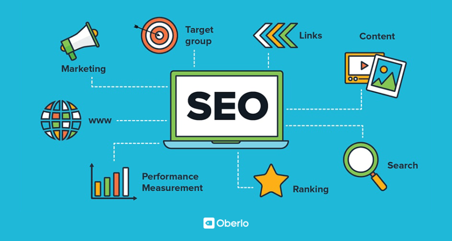

MARKETING DIGITAL
La solución

El marketing digital es una forma de marketing que utiliza canales digitales para llegar a los consumidores. Las empresas y las marcas pueden utilizarlo para llegar a nuevos públicos, aumentar el conocimiento de la marca e impulsar las ventas.
COMMUNITY MANAGEMENT
La administración
Un community manager se encarga de construir, ampliar y administrar comunidades online. A través de herramientas analíticas que le permiten medir cómo los usuarios entienden y perciben a una marca determinada, intentan que esa sensación se asemeje lo más posible al objetivo de comunicación de la empresa.
SEARCH ENGINE OPTIMIZATION
Correcto posicionamiento

El posicionamiento en buscadores, optimización en motores de búsqueda o SEO es un conjunto de acciones orientadas a mejorar el posicionamiento de un sitio web en la lista de resultados.